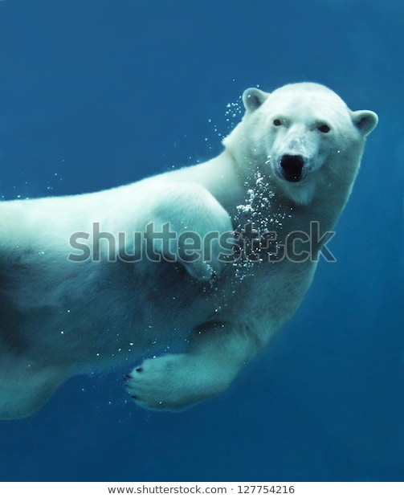
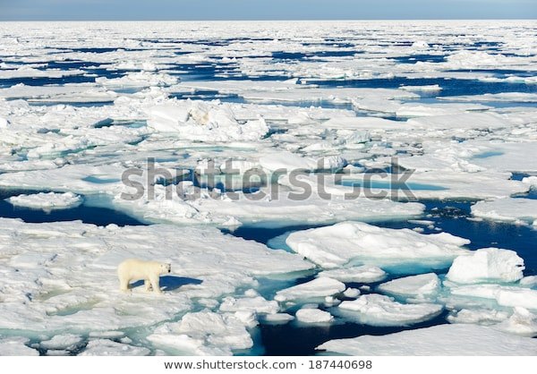
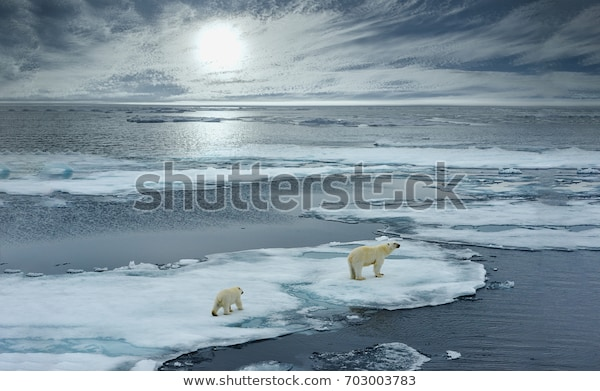

The polar bear lives in the Arctic Circle and surrounding land masses, often as far south as Newfoundland. Their range spans the territories of the countries Denmark (Greenland), Norway (Svalbard), Russia, the United States (Alaska), and Canada. Polar bears will sometimes be spotted in Iceland after swimming over from Greenland, roughly 600 sightings since the 9th century AD. Although thought to reside only in low densities in the Arctic Basin, there are 19 generally recognized subpopulations. Thirteen of these occupy North America, ranging from the Beaufort Sea to Hudson Bay and east to Baffin Bay in Greenland, accounting for about 54% of the population worldwide. Of the 19 subpopulations, seven are stable, two are increasing, with one decreasing, and nine have insufficeient data as of 2017.
Classified as marine mammals, polar bears spend majority of the year on sea ice in search for their main source of food, seals. Despite this, they are equipped with large, powerful limbs and feet to allow them to traverse on foot. Preferring the annual sea ice covering the continental shelf, known as the "Arctic ring of life," have high biological productivity compared to the deeper waters of the high Arctic. They tend to occupy areas where ice meets sea to better hunt for seals. Since freshwater is limited, locked in snow or saline, polar bears have adapted to produce water through metabolising fats found in seal blubber, therefore inhabiting areas mostly along the perimeter of the polar ice cap rather than the Polar Basin where seal populations diminish.
Annual ice consists of areas of water tht appear and disappear in response to weather changes throughout the year. Seals migrate to follow these patterns, and the bears must follow. In some areas, including those of Hudson Bay and James Bay, the ice melts completely each summer, forcing polar bears to wait on land for months until the next freeze. In the Beaufort and Chukchi seas, they retreat north to the sea ice that remains frozen year-round.
 